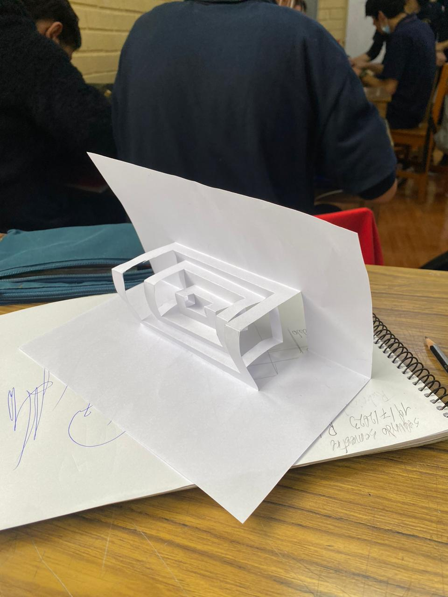
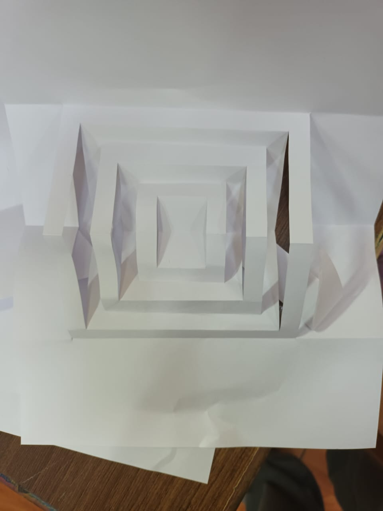

Sobre nosotros
Somos Diego Becker y Andrés Juica.
Nosotros creamos esta página en la cual recopilaremos nuestros trabajos hechos en la clase de tecnologia
wix😴😴😴😴😴
v el es el peligro v

Somos Diego Becker y Andrés Juica.
Nosotros creamos esta página en la cual recopilaremos nuestros trabajos hechos en la clase de tecnologia
wix😴😴😴😴😴
v el es el peligro v

Wish list Karlson on steam
Portafolios
1° Semestre
| Trabajo 19/4/23
Nombre: Torre de Einstein Maqueta. Hecho por Diego Becker y Andrés Juica. |
Trabajo 7/6/23
Nombre:Retablo Casa. Hecho por Diego Becker y Felipe Vega. Imagen rehecha en 3d |
Trabajo 7/6/23
Nombre:Retablo Banco. Hecho por Andrés Juica y Adriano Manchego. |
Trabajo 23/6/23
Nombre:Tren a motor. Hecho por Diego Becker, Andrés Juica y Adriano Manchego. |
|---|---|---|---|
2° Semestre
| Trabajo 19/7/23
Nombre:Kirigamin. Hecho por Diego Becker y Adriano Manchego. |
Trabajo 19/7/23
Nombre:Kirigamin. Hecho por Andrés Juica, Matias Ojeda y Marco Hernández. |
|---|---|
|  |  |